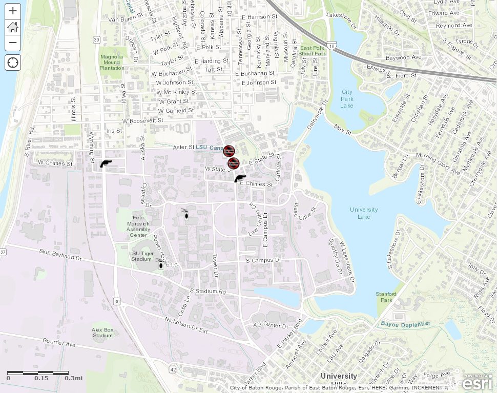
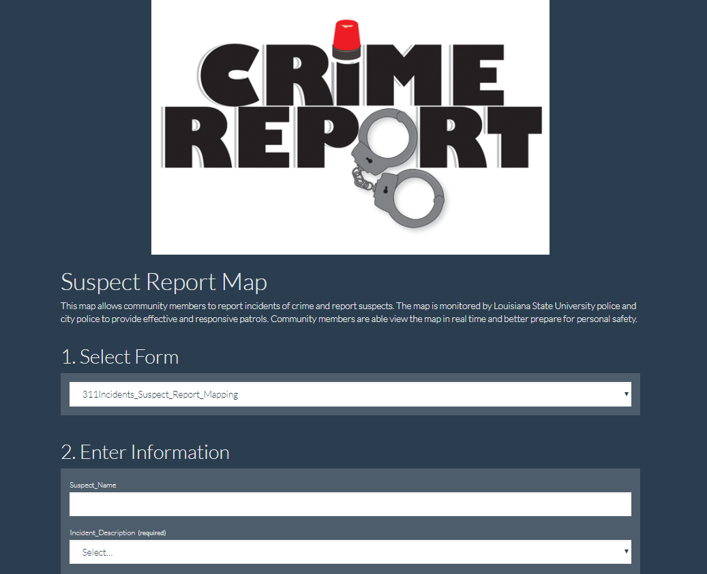

Book Assignment 1: Story Tour.
Here you can take a story virtual tour of downtown Baton Rouge.
Several points of interest are available for you to explore!
Enjoy the tour!


Assignments
This is a collection of maps created for Geography 4046: Web GIS
Book Assignment 1: Story Tour.
Here you can take a story virtual tour of downtown Baton Rouge.
Several points of interest are available for you to explore!
Enjoy the tour!
Book Assignment 2: Earthquake Activity Map
The Global Earthquake Activity Map indicates earthquake size and
location, in addition to other data recorded at the time of the event.
Organizations such as the US Geological Society (USGS) is participatory
in a global network of earthquake detection and warning systems.
Read how to be prepared for any size event!

Book Assignment 3: Suspect Report
Communities can help each other be aware of recent crime activity
by reporting incidents, anonymously or otherwise.
The linked map allows community residents to view where crimes
have occured in real time and use the data to stay safe.

The map focuses on the crime on and surrounding the
Loisiana State University campus.
Fill out the form below to report a crime incident and suspect!
Suspect Reporting Form
